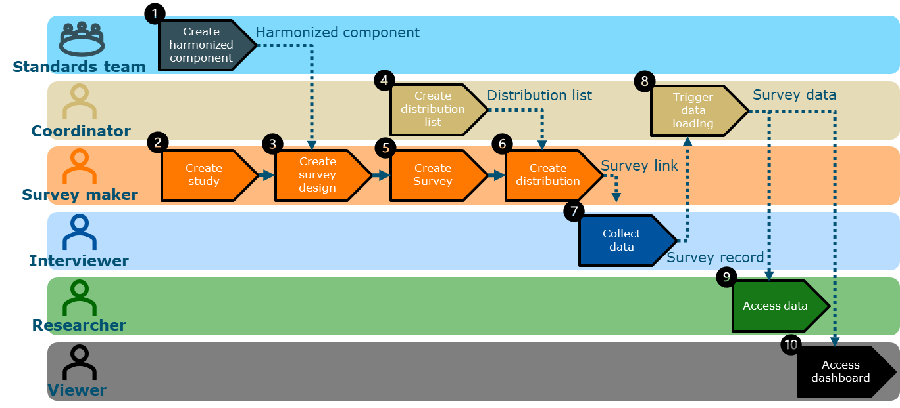
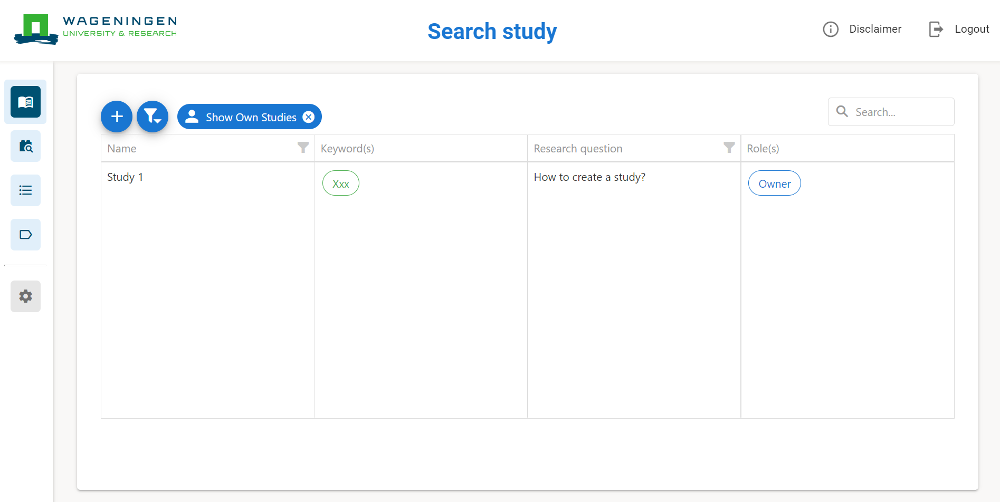
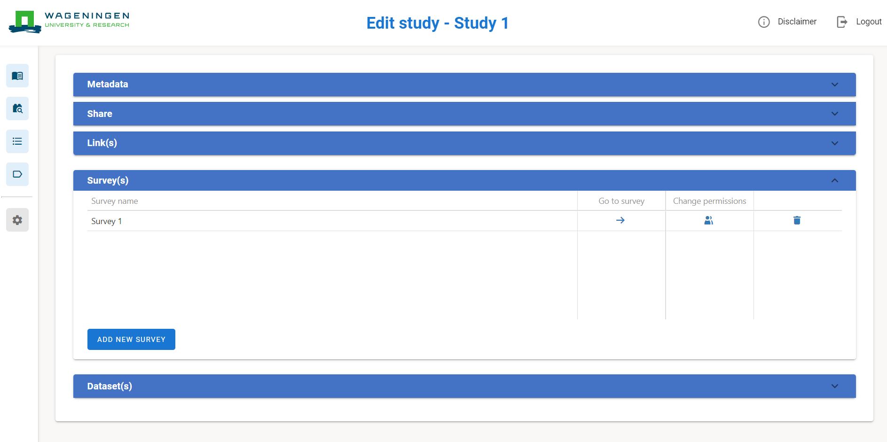
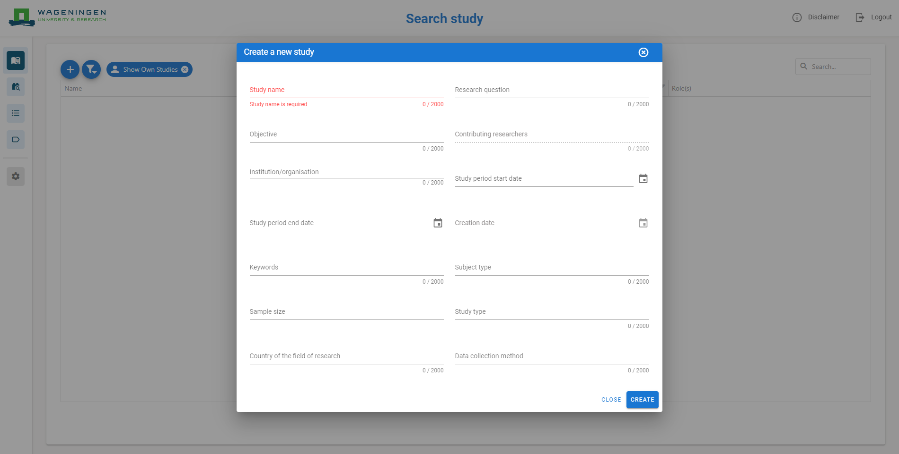
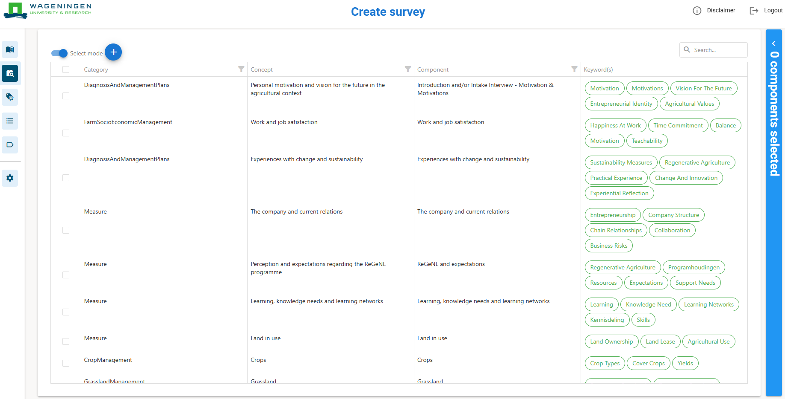
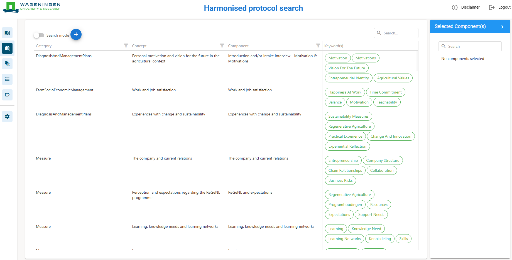
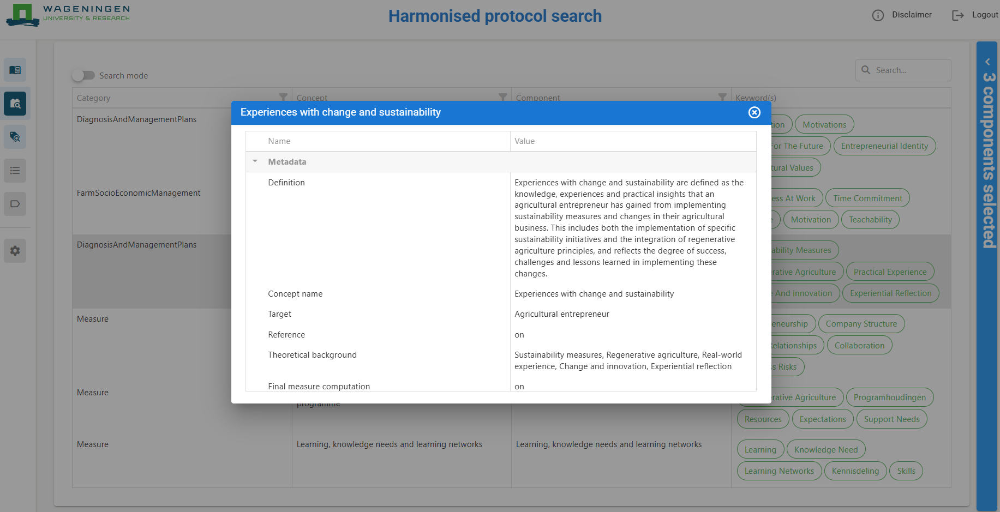
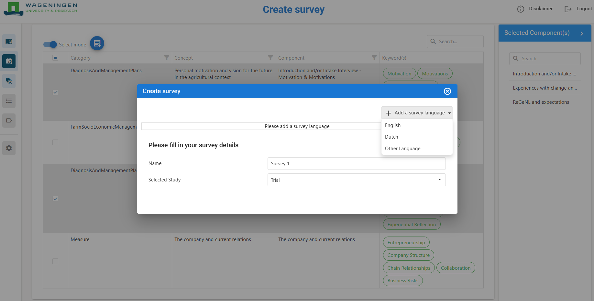

Home
Table of Contents
Table of Figures
Figure 1. Workflow 3

Figure 2. Create new study 7
Figure 3. Select user and role for study 8
Figure 4. Search study page 9
Figure 5. Add new survey 11
Figure 6. Harmonised protocol search page 12
Figure 7. Datagrid mode selection 12
Figure 8. Metadata of component 13
Figure 9. Create survey 14
Figure 10. Harmonised components in survey 15

Figure 11. Rules of component in survey 16
Figure 12. Question properties of harmonised component 17

Figure 13. Question types 18

Figure 14. Single choice question properties (custom) 19

Figure 15. Classification scale points 19
Figure 16. Add harmonised component in survey 20
Figure 17. Create a new custom component in survey 20

Figure 18. Create new question in survey 21
Figure 19. Study quick access export 22
Figure 20. Survey export types 22

Figure 21. Upload distribution contact list 23

Figure 22. Create distribution link 24

Figure 23. Generate distribution link 24

Figure 24. Data Table in Qualtrics 25

Figure 25. Edit responses in Data Table 25
Figure 26. Export Data from Qualtrics 26